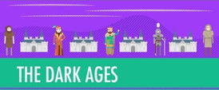
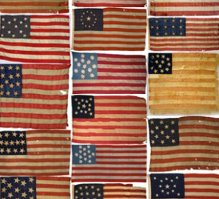

All Items
+ AddKevin R.

 www.historyonthenet.com/tag/world-war-two/
www.historyonthenet.com/tag/world-war-two/
World War II History resources
Map Creation Questions
- What is a map?
- Why do people use maps?
- Who uses maps?
- Are there different kinds of maps?
- Why is it important to know how to use a map?
WheninRome.pptx
Introduction to Rome powerpoint.
The focus of this powerpoint is for students to get an understanding of the Roman lifestyle - what did they wear, eat, and do for fun? Where did they live, work, and relax? What were the common customs and traditions, religious beliefs, and culture like?

The Dark Ages...How Dark Were They, Really?: Crash Course World History #14
John Green teaches you about the so-called Dark Ages, which it turns out weren't as uniformly dark as you may have been...
Middle Ages Pop Quiz
Random day pop quiz. 10 true or false questions.

Student Project Ideas
- Create a timeline of notable events for a certain period.
- Create a timeline for a person.
- Create a timeline for a certain event.
- Write a short story/poem about a notable event from the point of view of a notable person.
Bet You Didn't Know: Founding Fathers Video (2min)
Our Founding Fathers were responsible for a lot more than the Declaration of Independence. Find out more about their…